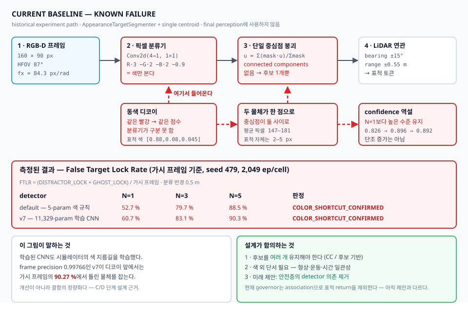
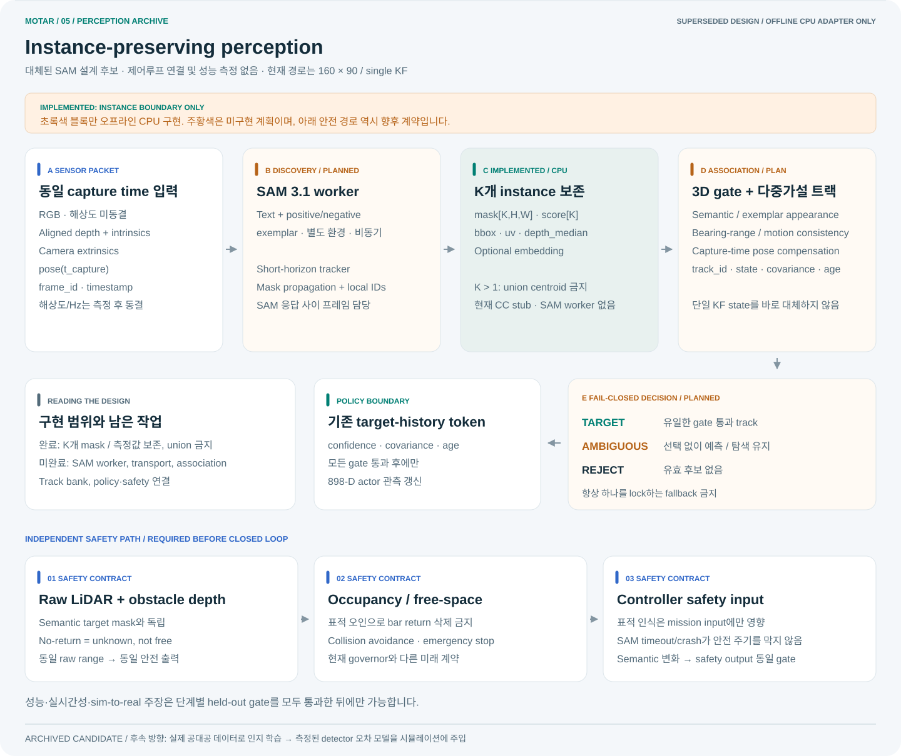
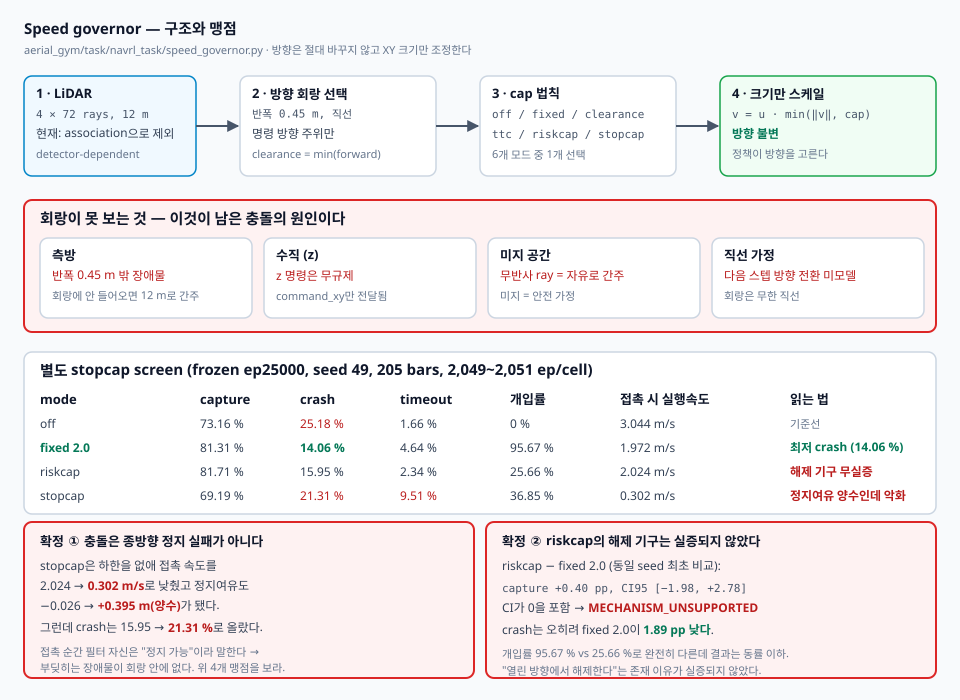

Structured perception
RGB-D target track, 4×72 LiDAR, ego velocity·yaw·height를 898-D history로 구성합니다. 탐지기는 YOLO가 아니라 1×1 conv 색 분류기이며 동색 디코이를 구분하지 못합니다.
카메라와 LiDAR만으로 밀집 장애물 속 움직이는 표적을 추적하는 드론 정책. 성공률 경쟁보다 언제, 왜 실패하는지를 재현 가능한 수치로 설명합니다.
01 · OVERVIEW

02 · 3D ARENA
새 physical fresh lineage의 40×40×3 m arena와
footprint_clearance 배치를 재현합니다. 실제 collision footprint의 외접원을
사용해 막대 중첩을 금지하고 표면 여유 0.45 m를 유지하며 merge fallback도 쓰지 않습니다.
과거 정량 결과의 navrl_band는 중첩을 허용한 historical 환경입니다.
표적은 10 Hz 고정 simulation clock에서 움직이고 화면만 보간합니다.
기본 routed-preview는 동결된 historical global_astar_v1
exact-AABB route를 bounded/lagged browser motion으로 설명합니다. recovery-v2 state machine을
재현하거나 성공으로 표시하지 않습니다. 코너 전환은 planning-time clearance certificate로 검사하고 실패 재계획은 직전 목표
1.0 m 이내를 제외합니다. pursuer와 target motion은 설명용이며, 이 화면은 PPO 실행 영상·PhysX 재생·성능 측정값이 아닙니다.
Loading 3D arena…
Routed preview: 0.25 m deterministic global route, exact bar AABB, 0.45 m tracking reserve, target 3-D box half-diagonal support(0.2069 m), boundary 1.25 m + support, certified corner handoff, 실패 후 직전 goal 1.0 m exclusion을 적용합니다. 대안 경로가 없으면 zero command입니다. Global route + bounded/lagged browser preview · NOT PhysX/PPO.
03 · METHOD
RGB-D target track, 4×72 LiDAR, ego velocity·yaw·height를 898-D history로 구성합니다. 탐지기는 YOLO가 아니라 1×1 conv 색 분류기이며 동색 디코이를 구분하지 못합니다.
17개 token을 4-layer Transformer가 처리합니다. PPO는 actor와 asymmetric critic weight를 학습합니다.
출력은 유한한 body velocity와 yaw-rate 명령이며 altitude PI와 Lee controller를 거쳐 동역학에 적용됩니다.

aₓ, aᵧ, aψ가 수평 속도와 yaw-rate를 정합니다. actor가 출력한 a_z는 실행되지 않고 altitude PI가 수직 명령을 덮어씁니다.
body-frame setpoint를 yaw로 world frame에 회전한 뒤 실제 world velocity와 비교합니다. 고정 gain Kv=[2.5,2.5,2.5]로 가속도와 요구 힘을 만듭니다.
요구 힘의 수평 성분을 45° 이내로 제한합니다. upright 상태에서는 T=fz/b3z 보상으로 기울어진 동안에도 수직 힘을 우선 보존합니다.
attitude/rate error가 body torque가 되고 allocation matrix가 네 모터 명령으로 바꿉니다. 모터는 0.04 s 1차 지연을 거쳐 100 Hz rigid-body physics에 적용됩니다.
04 · PERCEPTION
탐지기는 YOLO가 아닙니다. 1×1 conv 색 분류기가 픽셀을 고르고, 양성 픽셀 전부가 하나의 중심점으로 붕괴합니다. connected components가 없어 후보는 언제나 1개이므로, 같은 색 물체가 하나만 더 있어도 구분하지 못합니다. v7 학습 CNN(frame precision 0.99766)조차 디코이 5개에서 가시 프레임의 90.27%에서 틀린 물체를 잡습니다. confidence는 N=1/3/5에서 0.826→0.896→0.892로, 단조 증가는 아닙니다. 개선이 아니라 결함의 정량화입니다.

| 무엇을 바꿨나 | capture 효과 | 판정 |
|---|---|---|
| 자료구조 — connected components 다중 후보 + χ²(3) 게이팅 | 없음 (FTLR +1.3 pp) | RECOGNITION_DOMINANT |
| 거리 측정 분산 — 물리적으로 옳은 2차 모델 (20 m에서 2.3배) | 없음 (−0.34 pp, CI [−3.19, +2.51]) | VARIANCE_INSENSITIVE |
| 어느 물체를 lock 하는가 — 동색 디코이 5개 | FTLR 90.27% (N=5) | COLOR_SHORTCUT_CONFIRMED |
세 번째 행의 판정 지표는 FTLR입니다. 같은 셀의 capture는 68.13% → 12.64%로 떨어지지만 그 원값은 판정에 쓰지 않습니다 — distractor가 다섯 코드 경로에서 자유 공간으로 남아 충돌이 미귀속 contact로 기록되고 정적 goal이 distractor 안에 놓일 수 있습니다. 방향은 명확하지만 크기는 교란돼 있습니다.
구속 조건은 측정 품질이 아니라 물체 동일성입니다. 더 정밀하게 재도, 후보를 더 잘 관리해도 달라지지 않습니다. 무엇을 표적으로 볼 것인가만이 문제입니다.

위 구조는 설계 후보였고 측정으로 대체됐습니다. 제어루프에 들어간 적이 없고 성능 주장도 아닙니다. 대체 사유 둘: (1) 표적에 형상 정보가 없습니다 — detector가 보는 표적은 반지름 0.15 m 해석적 구에 상수색을 칠한 것이고, 디코이 3종 중 하나는 같은 반지름의 구입니다. 배경은 40×24 depth를 업샘플한 회색 명암이며 텍스처도 조명도 없고, 저장소에 쿼드로터 메쉬가 존재하지 않습니다. (2) 일반 시뮬로 학습한 detector는 실제 저조도에서 mAP 37.2%인 반면 실사진 기반은 96.4%입니다. 우리 렌더러는 그 "일반 시뮬"보다 열악합니다.
따라서 인지는 실제 공대공 데이터로 학습하고, 시뮬에는 그 detector의 측정된 오차 모델을 주입해 정책을 학습시킵니다.
05 · EXTERNAL DATA
실데이터로 학습하기로 한 이상 라이선스가 설계 제약이 됩니다. 문구가 불명확한 데이터로 학습한 결과는 게재 단계에서 무효가 될 수 있습니다. 아래는 2026-09-04에 직접 확인한 결과입니다. 기기 제약은 여유 저장 공간 약 15 GB(RAM이 아니라 SSD)이고, 이것이 규모 선택을 지배합니다.
| 자산 | 라이선스 | 규모 | 시점 | 상태 |
|---|---|---|---|---|
| NPS-Drones | BSD-3-Clause | 2.04 GB | 공대공 | 확보 중 · 70,250 프레임 · 표적 10×8–65×21 px |
| Det-Fly | MIT | 9.34 GB | 공대공 | 미확보 — 여유 공간 부족 · 13,271장 3840×2160 |
| MIDGARD | 명시 없음 (인용 요청만) | 3.53 GB | 공대공 | 미확보 · 거리 GT 포함이라 오차 모델에 유용 |
| DUT Anti-UAV | Apache-2.0 | 1.32 GB | 지상→공중 | 시점 불일치 · OOD 세트로만 가치 |
| AOT | CDLA-Permissive | 13.4 TB | 공대공 | 전량 불가 · 부분 2–3 시퀀스만 · 흑백 + 유인기 표적 |
| 자산 | 막힌 이유 |
|---|---|
| ARD100 (YOLOMG) | Baidu 전용 배포, 규모 미공개(추정 20–40 GB). 코드가 GPL-3.0이라 파생 코드에 전염. 평균 표적 면적 0.01%로 우리 영역에 가장 가까운데 접근이 막힘 |
| ARD-MAV (GLAD) | zip 14.6 GB — 압축 해제 전에 이미 여유 초과. 저장 공간이 늘면 1순위 |
| Drone-vs-Bird | 공개 링크 없음. 데이터 사용 동의서 서명 필요, 처리 기간 미공지. 게다가 지상→공중 |
| FL-Drones | 라이선스 모순 — EPFL은 공개 링크를 두는데 후속 논문 저자는 "저자 허락 필요"라고 명시. 문구가 없으므로 기본 저작권 적용 → 서면 허락 없이 사용 불가 |
| 레포 | 가중치 | 라이선스 | 비고 |
|---|---|---|---|
| GLAD | 확보 · yolov5s_GLAD.pt 14.4 MB |
LICENSE 파일 없음 (배지만) | ARD-MAV 학습 = 우리 영역과 일치. TensorRT 엔진은 하드웨어 종속이라 사용 불가 |
| TransVisDrone | NPS/FL/AOT 3종 | MIT | 라이선스가 가장 깨끗. 단 시간 모델이라 연속 5프레임 필요 |
| YOLOMG | 없음 | GPL-3.0 | 직접 학습해야 하는데 ARD100 접근이 막힘 |
| C2FDrone | 없음 | 없음 | 재현 불가 |
ultralytics/yolov5는 AGPL-3.0입니다. 평가만 하면 무관하지만
그 소스 위에 만든 코드를 공개하면 우리 코드도 AGPL이 됩니다. 아키텍처 선택 시의 제약입니다.
06 · SAFETY FILTER
거버너는 명령 방향 주위 반폭 0.45 m 직선 회랑 안의 LiDAR ray만 보고
수평 명령의 크기만 조정합니다. 방향은 정책이 정합니다.
하한을 없앤 stopcap은 접촉 시 정지여유를 양수(+0.395 m)로 만들었는데도
crash가 올랐습니다 — 즉 부딪히는 장애물이 회랑 안에 없습니다.
맹점은 측방, 수직(z 무규제), 미지 공간(무반사=자유), 직선 가정 넷입니다.

07 · EVIDENCE
timeout bootstrap과 corrected-v2 의미론 검증
geometry audit only; 300 bars FAIL 94.661%; no 205 policy evidence
execution/source receipts PASS; route mechanism FAIL
frozen gate ≥99%; neutral pursuer, no PPO loaded
frozen gate ≤1%; unsafe_start dominated
seed 907 · PASS_LEARNING_VIABILITY; held-out 성능 아님
145 bars 도달; 160/205 미도달, 재개하지 않음
seed 313 · Wilson 95% [82.04, 85.24]
Wilson 95% [63.46, 67.57]; crash 34.16%
실제 비행 성능, sim-to-real 성공, 300-bar 전 구간 성능, Transformer의 보편적 우월성.
실제 기체가 미조립이고 실제 센서 로그가 없으므로 현재 software-only gate의 판정은
SYNTHETIC_ONLY이며 실기 성능을 뜻하지 않습니다. 이번
baseline_1p25는 canonical 1.5 m/s 계약과 분리된 lower-contract이므로
1.25 결과를 1.5 성공으로 읽을 수 없습니다. route-off 정책은 145 bars까지만
학습·평가됐으므로 160/205 mastery를 주장할 수 없습니다.
corrected routed gate도 plan 17.78%, fallback 30.02%, 0.6 m/s goals/env 0.21875로 실패해
routed PPO는 여전히 차단돼 있습니다. 또한 표적 식별을 주장할 수 없습니다:
두 detector 모두 COLOR_SHORTCUT_CONFIRMED이고 N=5 v7 false target lock은
90.27%입니다. 마지막으로 riskcap 해제 기구와 off 대비 +9.23 pp 판정은
frozen ep25000 stopcap screen의 결과일 뿐 일반 평가 계약이 아닙니다.
08 · CONTRACT
ref5in은 hardware-informed simulation candidate입니다. CAD/BOM, 실측 관성·추력, 열·전원 및 비행 식별을 완료한 실제 플랫폼 사양이 아닙니다.